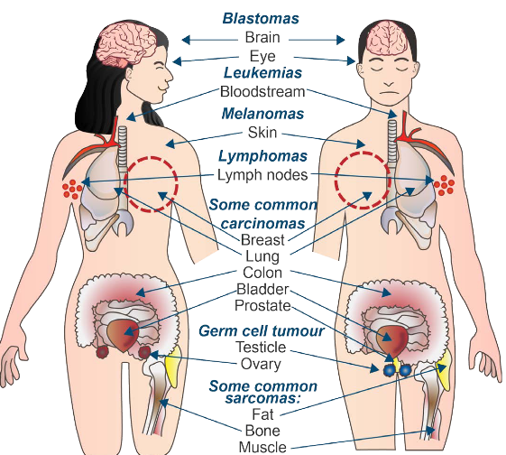
2 Origin of Cancer and Proto-Oncogenes
This week’s lecture aims to cover topics related to cancer, namely:
- What is cancer?
- Clonal origins of cancer
- What happens on the molecular level in cancer?
- What are some cancer-causing genes?
- What’s the purpose of proteins that are encoded for by proto-oncogenes?
- What are the three ways that proto-oncogenes can be activated?
2.1 Definition of Cancer
Cancer is a term used to describe a bunch of diseases that can happen anywhere in the body. It’s like when some cells in the body start growing really fast in a weird way. These strange cells can also try to take over other parts of the body, which scientists call spreading.
When these cells move to other places, it’s called metastasizing. Sadly, this spreading is a big reason why cancer can be so dangerous and even lead to death.
Some common cancer types include:
Carcinomas1
These come from epithelial cells.
Sarcomas
These come from connective tissue.
Lymphomas and Leukemia
These come from the cells that make blood.
Germ cell tumor
These come from pluripotent cells - stem cells that can differentiate into any tissue type but embryo kinds.
Blastomas
These are from embryonic tissues (though it can also be from brain and eye disorders).
2.2 Clonal Origins of Cancer
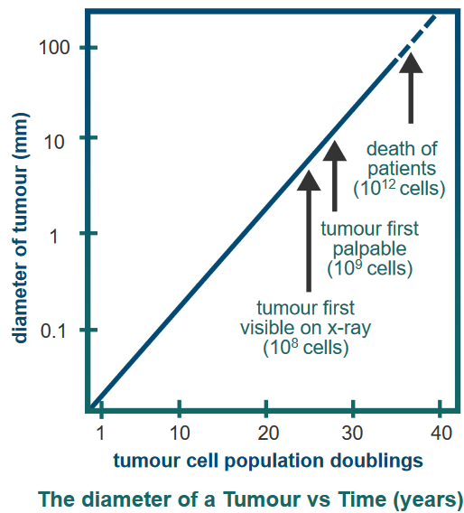
The figure above shows that tumors grow over time.
Cancer usually starts from just one strange cell that’s not normal. This first weird cell forms what’s called a primary tumor. It’s like the beginning of the problem. This cell has some changes in it that it can pass down to its new cells.
As time goes on, more changes happen, and the tumor becomes able to invade and take over other parts. When this tumor spreads to other places, it’s called metastasized, and that’s when it’s called cancer.
2.2.1 Evidence #1: Chromosomal Assembly
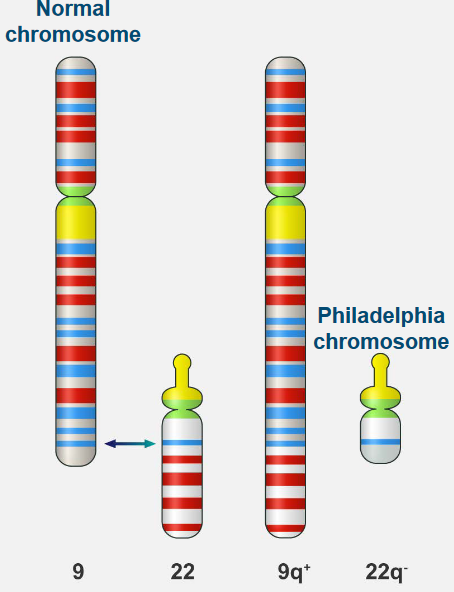
Normal white blood cells look a certain way in terms of their chromosomes, which are like their genetic parts. But in Chronic Myelogenous Leukemia (i.e., CML), there’s a special problem: a change in the chromosomes that’s unique.
his change is known as the Philadelphia chromosome. It happens because parts of two different chromosomes, number 9 and number 22, switch places. This helps doctors tell the difference between regular white blood cells and the ones causing CML.
2.2.2 Evidence #2: X Chromosome Inactivation
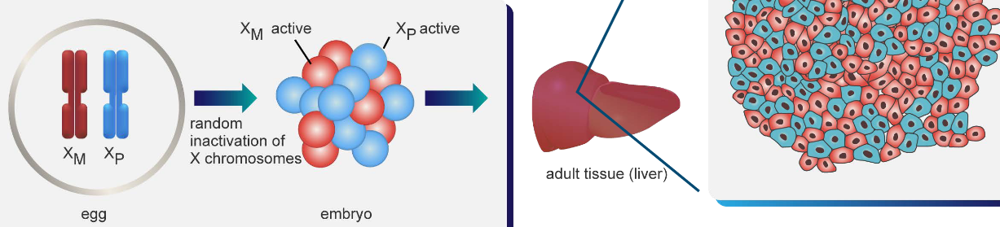
In adult bodies, one of the X chromosomes can be randomly turned off (see above) - something that happens when the person is an embryo. When scientists look at normal adult tissue, the active and the inactive X chromosome are evenly spread out.
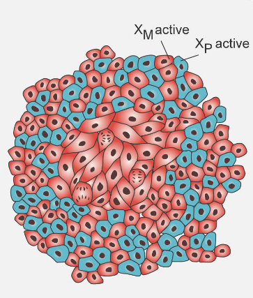
When a tumor is present, the same inactivated chromosome is inactivated.
2.2.3 How Cancer Develops
Cancer grows slowly as cells start to act strangely. A tumor forms as these abnormal cells keep changing and growing in number. This creates a group of really bad cells that can take over nearby tissue.
First, a cell becomes mutated by accident, turning into an odd cell. Then, this cell starts to multiply, getting more mutations as it does. This keeps happening, and the cell multiplies even more, with more mutations each time. Finally, these mutated cells grow out of control and start invading nearby tissue, which can be really harmful.
During a regular human life, the body goes through around 1016 cell divisions. Sometimes, mutagens - things that can cause mutations - are present in the environment. The natural rate of mutations that happen on their own is about 1 in every 10-6 genes during each cell division. This means that every gene can undergo a mutation about 1010 times.
2.2.4 Basis for Clonal Origins of Cancer
There are two case studies listed here:
Study of Colon Cancer in Women in 1987 England
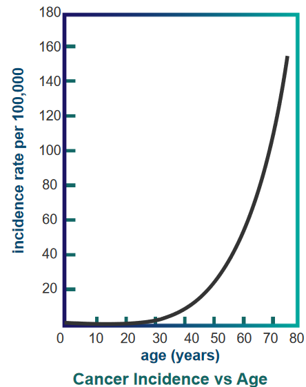
Cancer Incidence over Age In 1987, researchers looked at colon cancer cases in women in England. They found that as women get older, the chances of getting colon cancer increase a lot, which is shown in a graph.
Study of Workers Exposed to Carcinogens in 1950s
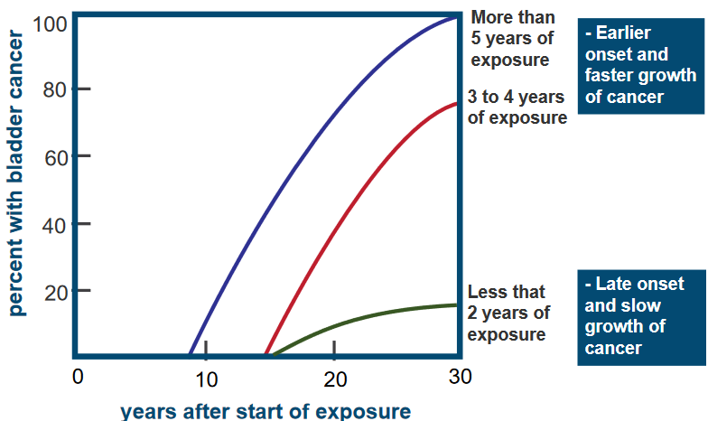
Percentage of Bladder Cancer Patients Among Workers Over Time The graph above is about a group of 78 workers in a chemical industry who were exposed to a harmful substance called a carcinogen, specifically 2-naphthylamine.
It’s showing how long it took for these workers to develop bladder cancer after being exposed to the carcinogen. What the graph shows is that the workers who were exposed to the carcinogen for more years tended to get cancer earlier, and their cancer grew faster compared to those with less exposure.
2.3 Molecular Events in Cancer
Some events were already covered in the previous week’s lecture.
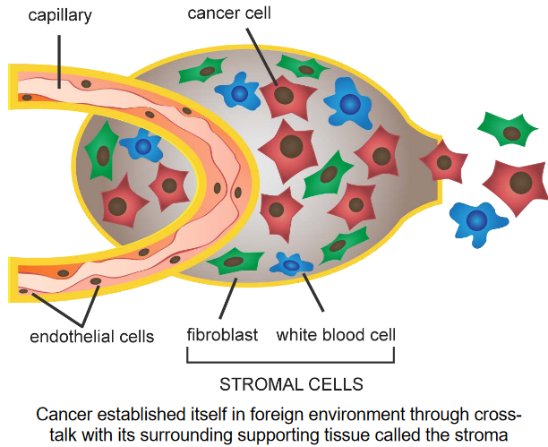
Nonetheless, tumor stroma refers to how cancer cells communicate and affect the tissue around them. The stroma is like a scaffold for the tumor. The cancer cells release special proteins and enzymes that cause changes in the stroma.
The cells in the stroma help the cancer cells grow and spread by responding to these proteins and enzymes. It’s like a conversation between the cancer cells and their surroundings that helps the cancer to grow.
2.4 Identifying Cancer-Causing Genes
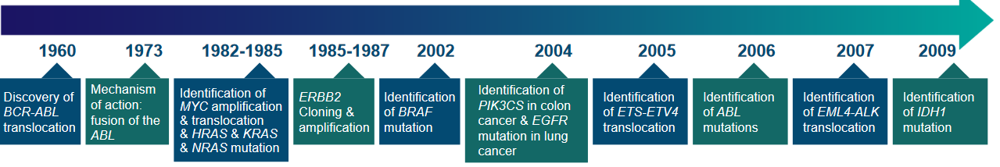
Back in the 1970s, people thought that cancer cells were like changed or mutant cells. This led scientists to look for genes that went through mutations while tumors were forming. But it was tough because the human genetic code was really complicated.
Cancer doesn’t usually happen because of just one change; it needs many different mutations and changes. Even now, there’s no easy way to search for genes that control cancer growth in a systematic manner. Instead, finding these important genes happened in a roundabout way, using experiments that weren’t directly focused on them.
2.4.1 Mechanisms of Cancer-Causing Genes
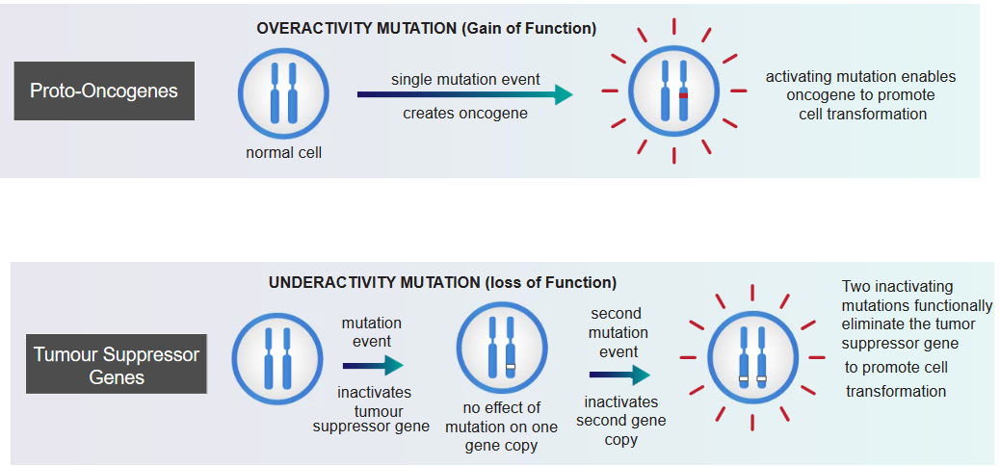
In the above grahpic, something called an overactivity mutation can lead to cancer. In this kind of mutation, a single change happens in a gene, and it becomes an oncogene: a gene with the potential to cause cancer. This oncogene becomes more active and encourages cells to change in a way that can lead to cancer. This change is strong and directly makes cells act in a cancerous way. It’s like a dominant force that causes cancer.
On the other hand, something called an underactivity mutation can also lead to cancer. These mutations affect genes called tumor suppressor genes. When a first mutation happens, it doesn’t really show an effect because we usually have two copies of each gene. But if a second mutation occurs, inactivating the second copy of the gene, it can turn off the tumor-suppressing abilities of that gene. When both copies are inactive due to these mutations, it can lead to the promotion of cell changes that are linked to cancer. This type of change is recessive, and it directly causes cancer by disrupting the normal regulation of cell growth.
2.4.2 Activating Proto-Oncogenes
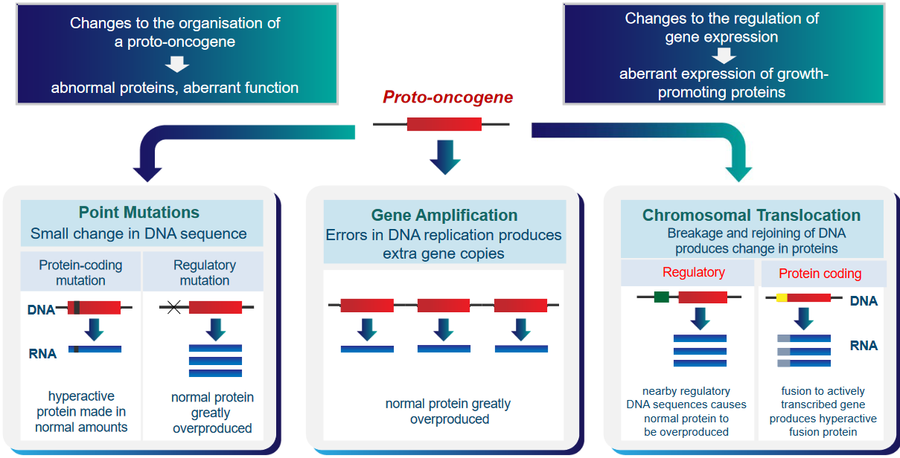
There are two main ways this can happen. First, the organization of these proto-oncogenes can change, making them create abnormal proteins with strange functions. Second, the control over how these genes are used can change, causing them to make too much of certain proteins that promote cell growth. These changes can make cells behave in unhealthy ways that might lead to cancer.
A proto-oncogene can also lead to cancer in one of three ways:
Point Mutations
A small change in the DNA can either lead to a normal amount of a hyperactive protein being produced (i.e., protein-coding mutation) or the overproduction of a normal protein.
Gene Amplification
Mistakes in the DNA produce extra copies of the gene.
Chromosomal Translation
Breaking and rejoining DNA can produce changes in proteins. If this rejoining happens in regulatory DNA, then the normal protein can be made too much. Otherwise, a hyperactive fusion protein can be made if this happens in protein-coding DNA.
2.4.3 Experiments Demonstrating Proto-Oncogene Activation
There are three experiments mentioned:
2.4.3.1 Oncogene Identification Using Mouse Fibroblast Cells
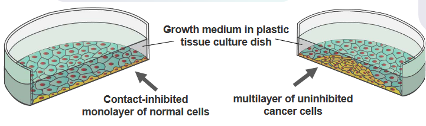
The researchers took the DNA from normal cells and broke it into smaller pieces. Then, they put these DNA pieces into cells that were growing in a dish. The normal cells in the dish usually stop growing when they touch each other. Once they cover the dish in a single layer, they don’t keep multiplying.
In cells with the proto-oncogenes turned on, the researchers took the DNA from these cancerous cells and broke it into smaller pieces. They then put these DNA pieces into cells growing in a dish. The cells with the cancer-causing genes didn’t pay attention to the usual growth restraints. Instead, they started growing in an abnormal way, piling up on each other. Each pile, called a colony, came from just one starting cell. This shows how these genes can make cells act in a cancerous manner.
2.4.3.2 Amplification of the N-myc Proto-Oncogene
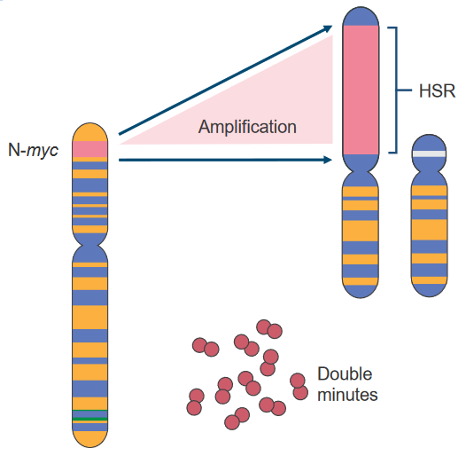
Scientists sometimes study chromosomes using two methods:
G-banding
Certain parts of the DNA get stained more or less. The staining helps identify regions with different DNA content.
R-banding
Different parts of the DNA are stained more.
When certain regions are overactive and have a lot of DNA, they’re called Homogeneously Staining Regions (i.e., HSRs). These HSRs can sometimes be removed and become Double Minutes (i.e., DMs), which can even move to other chromosomes.
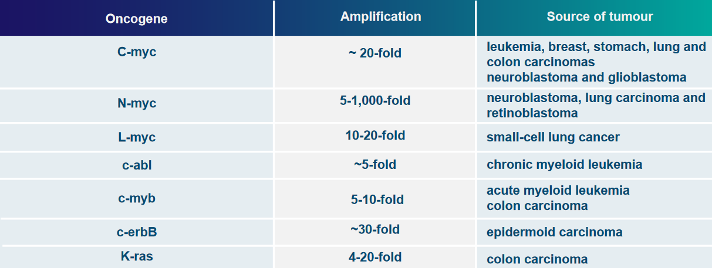
Some examples of genes that can be overly active due to these changes are c-myc, N-myc, and L-myc.
2.4.3.3 Chromosomal Translations
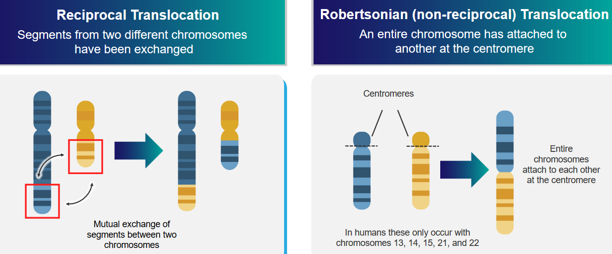
The above graphic mentions two kinds of translocations:
Reciprocal Translocation
Two different parts of two different chromosomes are exchanged.
Robertsonian (i.e., non-reciprocal) Translocation
An entire chromosome is attached to another at the centromere: the center of the chromosome.
2.4.3.3.1 Example 1: Chronic Myelogenous Leukemia (Philadelphia Chromosome)
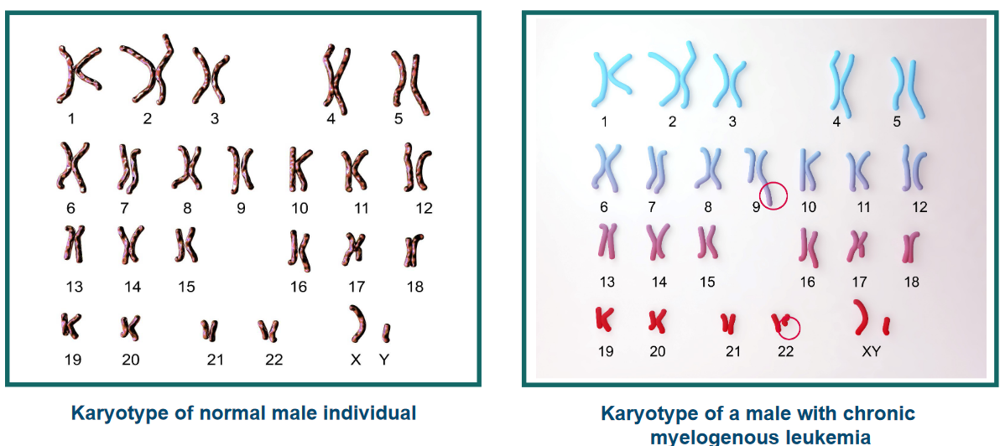
Usually, there are two genes named abl and bcr, and they’re on different chromosomes (chromosome 9 and 22). But sometimes, things change. The chromosomes break and swap places in a process via Robertsonian translocation. This makes the abl gene and the bcr gene stick together on one chromosome. This special chromosome is called the Philadelphia chromosome.
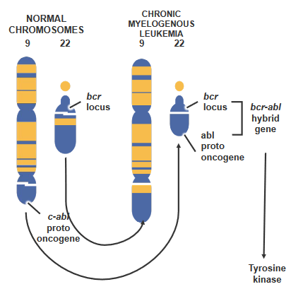
The breakpoint cluster region protein (i.e., bcr) is also known by another name - renal carcinoma antigen NY-REN-26.
There’s a proto-oncogene called c-abl on chromosome 9. In certain cases, this gene moves to a specific spot called the breakpoint cluster region (i.e., bcr) on chromosome 22. When this happens, something special takes place. A new kind of tyrosine kinase forms, which works on its own without following the usual rules. This change is a bit like a switch getting flipped, and it’s part of why things go wrong in cancer.
2.4.3.3.2 Example 2: Burkitt’s lymphoma - High-Grade B-Lymphocyte Neoplasm
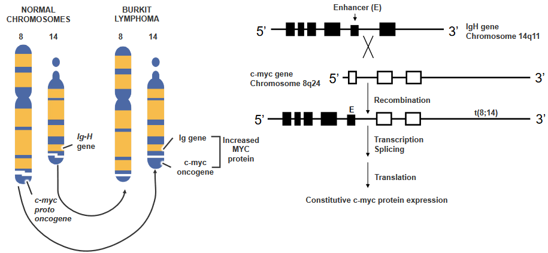
There’s a gene called c-myc, and it’s usually quiet in certain blood cells. But sometimes, things get mixed up. There’s a kind of change called T(8;14) translocation, and it makes c-myc wake up when it shouldn’t. This happens because c-myc moves closer to a signal that tells it to start working.
It’s like a switch turning on that gene all the time, and this makes the cell keep making a protein called c-myc. It’s not how it’s supposed to be, but because of this change, the cell acts differently.
2.5 Proteins Encoded by Proto-Oncogenes
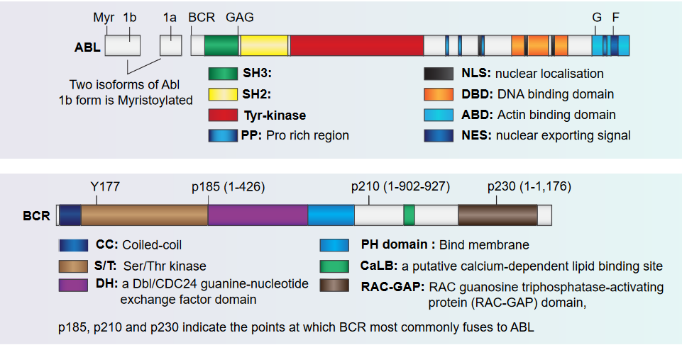
The figure above shows how the Abl and the Bcr proteins are structured.
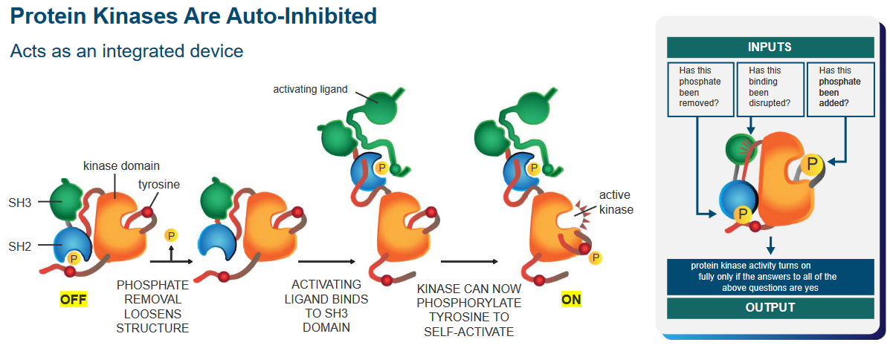
Protein kinases are like an automatic machine that helps cells do specific tasks. These machines have a built-in safety feature” that keeps them from working all the time.
That said, there’s a phosphate group that, when removed, makes the kinase’s structure more flexible. Another part, like a button, gets pressed when an activating signal attaches to it. This signal binds to the protein in a special spot called the SH3 domain.
Now, because of this signal, the protein becomes a kinase, a part that can activate other parts. It’s like a switch turning on. With this newfound power, the protein can do something called phosphorylation, which is like adding a tiny tag to another part of the protein. This helps it become active and ready to do its job.
2.5.1 Domains of p210 Abl-Bcr Fusion Protein
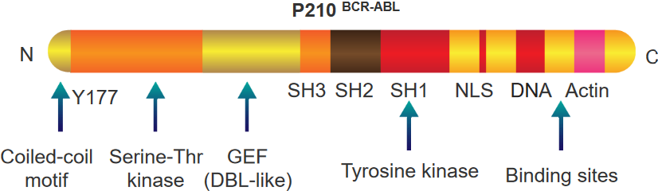
There are two things to note about this protein:
BCR Portion
This part also has a special spot called tyrosine 177 that acts like a hook for another protein called Grb-2. It’s like they link up. This protein also knows how to do something called phosphorylation, which is like putting little tags on other parts of the protein.
This protein has a part that’s like a switch for another type of activity called a kinase. Imagine it’s like a control button. And there’s one more part that’s like a tool. This tool helps the protein communicate and send signals, sort of like sending messages. All these parts together make the protein work in a special way.
ABL Portion
This part of the protein is like a team of different parts that work together. Imagine it’s like a superhero team. Some parts are like special detectors, called SH3 and SH2, that help the protein know when things are happening around it.
There’s also a part called SH1, which is like the captain of the team. It’s good at changing things, kind of like a leader. Then there’s another part that helps the protein find its way to the nucleus, which is like the command center of the cell. It’s like a secret key that helps the protein go where it’s needed.
Finally, this protein has parts that are like tools. These tools let the protein grab onto DNA and actin, which are like the building blocks and support beams of the cell. All these parts team up to make the protein do important jobs in the cell.
2.5.2 Abl-Bcr Protein Signalling in Cancer
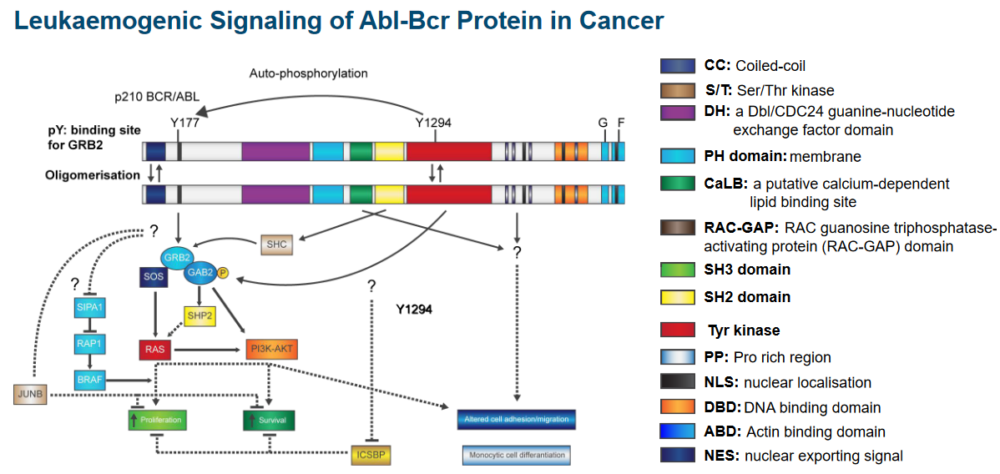
2.5.3 Discovery of Tumor Suppressor Genes
Scientists initially thought that when a gene changes, it adds new information instead of taking information away.
However, two approaches outlined by Henry Harris and George Klein showed otherwise:
Approach #1
Scientists did an experiment with mice cells. They mixed cells that cause cancer with cells that don’t. The new cells they got made fewer tumors than the cancer cells alone. Regular cells have genes that stop cancer-like behavior. The scientists thought that cancer might happen when certain genes are missing, not when new genes appear.
Approach #2
When two types of cells were combined, they noticed that the new cells started acting like cancer cells. They mixed normal fibroblasts with HeLa cells, which are from cervical cancer. What’s interesting is that when these new cells turned cancerous, it was linked to a missing chromosome 11. When they put back the missing part using cells from normal tissue, the cancer behavior stopped. This suggests that there might be a “stop-cancer” gene on chromosome 11. So, the loss of this gene might be causing the cancer-like behavior by removing something important.
So, the conclusion was that tumor-suppressor genes cause genetic information to be loss, not gained.
2.5.4 Functions of Tumor Suppressor Genes
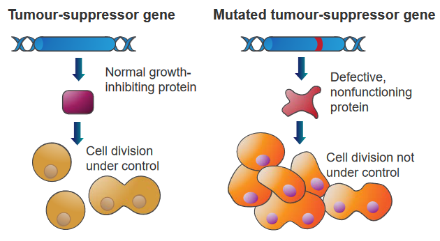
Genes that can stop tumors from growing by comparing normal cells and cancer cells. These genes have different jobs.
Some are like “gatekeepers” that stop cells from growing too much or make them die if they’re damaged. Others are like “caretakers” that fix DNA when it’s broken.
These genes tell cells to make proteins that slow down how much they grow and divide. So, a bunch of these genes working together in normal cells make sure cells don’t go crazy. But if one of these genes is changed by a mutation, it can’t control the cell anymore, and it grows and divides a lot. This can lead to cancer.
2.5.5 Inactivating Tumor Suppressor Genes
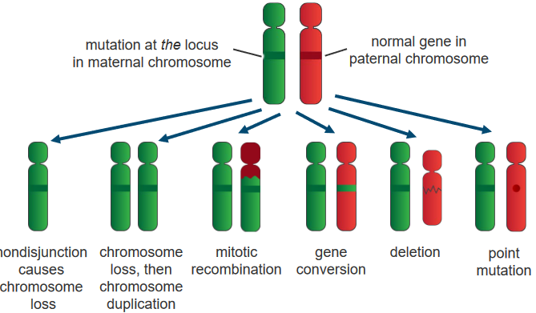
Notwithstanding genetic events, there are also three other ways that this can happen:
Recessive Genes
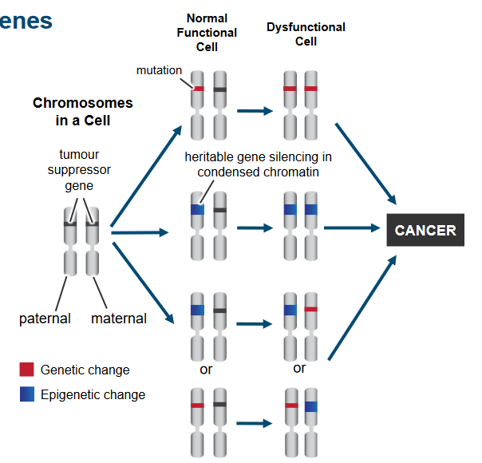
Tumor Suppressor Genes Being Inactivated If only one gene is lost, the cell keeps working fine. But for cancer to happen, both sets of genes from our parents must change. This happens through different changes in the genes and how they’re used. It’s like a two-step process where changes in the genes and how they work lead to the loss of tumor suppressor gene function in cancer cells.
Putative and Cloned Tumor Suppressor Genes
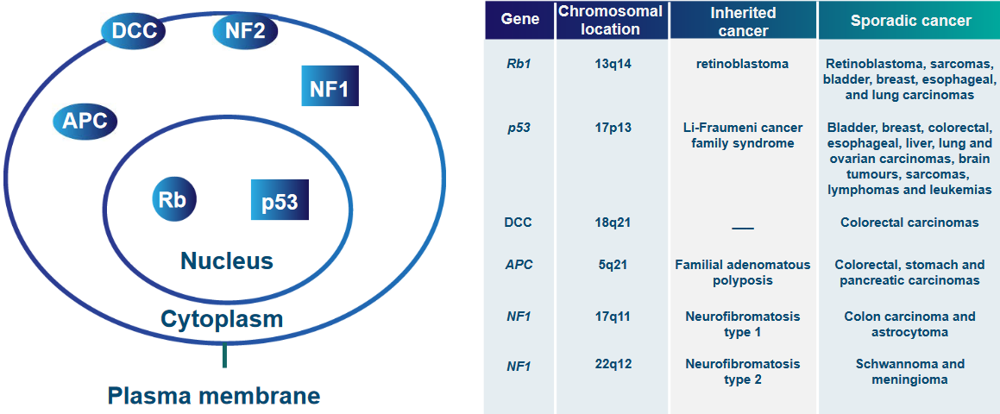
Gene Locations and Cancers Caused by Gene Mutations “Putative and Cloned Tumor Suppressor Genes” means scientists have found some genes that might stop cancer and they’ve also identified some genes that definitely do.
Imagine these genes as “superheroes” that try to prevent cells from turning into cancer. The “putative” genes are like potential heroes that scientists think might help, but they’re still checking if they’re the real deal.
On the other hand, the “cloned” genes are the confirmed heroes. Scientists have shown that these genes really can stop cells from going cancerous. So, it’s like scientists are assembling a team of gene superheroes to fight against cancer, with some in the “might-be” stage and others already in action.
Intra-Cellular Localization of Tumor Suppressor Proteins
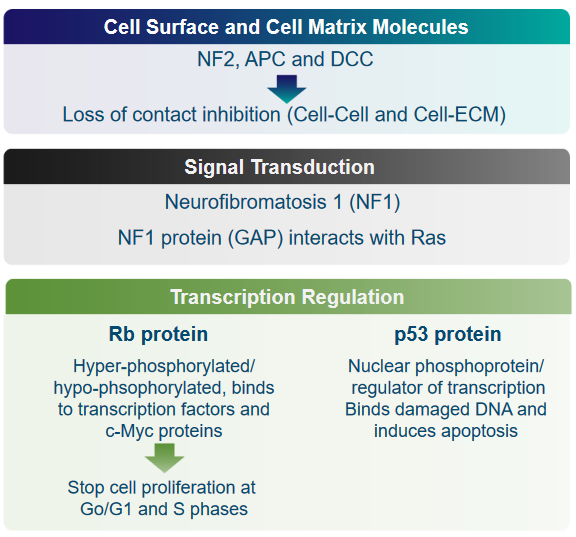
Gene Locations and Cancers Caused by Gene Mutations The above graphic mentions numerous proteins that can all keep tumor suppressor genes in the same area (i.e., localization):
Cell Surface and Cell Matrix Molecules: NF2, APC, and DCC
These are genes that help prevent cells from becoming cancerous. When these genes don’t work properly, they can’t stop cells from growing uncontrollably, which can lead to tumors forming.
Normally, cells “listen” to their neighbors and know when to stop growing. But in cancer, this communication can break down, and cells might grow without any brakes.
Signal Transduction: NF1 and GAP
This point is talking about how cells communicate within themselves. The Neurofibromatosis1 (i.e., NF1) protein helps control this communication, especially with a protein called Ras. When NF1 doesn’t work right, it can lead to uncontrolled cell growth.
Transcription Regulation: Rb and p53
Cells have a guardian called p53 that monitors their DNA. If it finds damaged DNA, it can order the cell to self-destruct (apoptosis) to prevent problems from spreading. Moreover, cells have “traffic lights” called Rb proteins that tell them when to stop growing. In cancer, these “lights” might not work properly, so cells keep growing when they shouldn’t.
All of the mentioned proteins are crucial to proper functioning of the cell. If these proteins aren’t where they should be or if they don’t work as they should, cells can start growing uncontrollably, leading to the development of tumors and cancer.
These are the most common kinds of cancer.↩︎